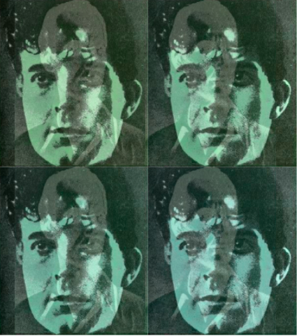
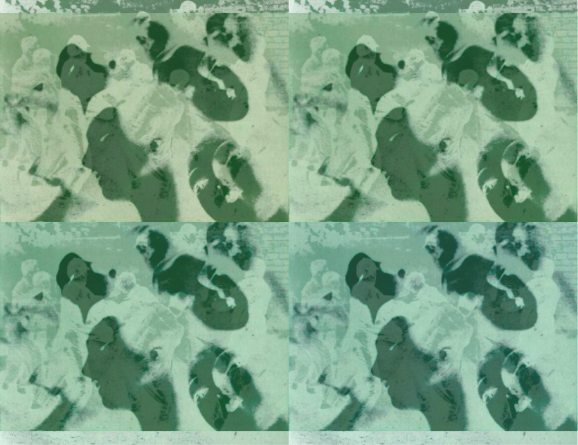

| # | thumbnail | date |
|---|---|---|
| 001 | May 6, 2021 | |
| 002 | May 6, 2021 | |
| 003 | May 6, 2021 | |
| 004 |  | May 6, 2021 |
| 005 |
| May 6, 2021 |
| 006 |  | May 6, 2021 |
| 007 | May 6, 2021 | |
| These webpages/images are made by applying CSS to images (view the source for specifics). The original images are mine unless the source is otherwise specified. | ||